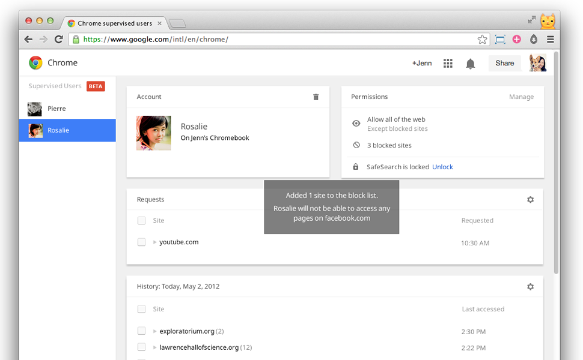

JENN CHEN
Designerd based in San Francisco.
Currently the design lead for Chrome OS at Google, helping to make powerful computing simple, secure, accessible, and affordable for all.
Likes to make things, explore new places near and far, get around on two wheels, and make friends with cute animals.
Chrome OS
UX LEAD AND MANAGER | JAN 2013 - PRESENT
Speedy, simple, and secure computing for all, whether it's laptops, convertibles, digital signage, kiosks, or desktops, and spanning across education, enterprise, and consumer use cases.
We've gone up against well-established giants to dominate the education market in the US, regularly top Amazon bestseller lists, and become the second most popular productivity OS after Windows (outshipping Macs starting in 2016).
As UX lead, my responsibilities include furthering the Chrome OS experience, setting the overall design goals and vision, ensuring that every user-facing feature we ship meets our high bar for product excellence, and managing a team of talented folks to execute on our outsized goals.
Task Management
Feb 2013 - Present
Lead design to help users better multitask and manage their windows on Chrome OS. Filed two patents and an academic paper.
Chromecast & Cast
Sept 2012
I joined the Cast team in its infancy to help define Cast and design the entire Chromecast experience for Chrome: the Cast extension, Chromecast setup/management on Chrome OS, casting video from Chrome on Android, and guidance for content partners and collaborators. I was very proud to be a part of Chromecast's successful initial launch in 2013.
Chrome Supervised Users
Feb 2013
Making Chrome/Chrome OS a vehicle in which children can have a safe experience exploring the web.

Chrome, etc.
Sept 2012 - Present
Other Chrome-y things I've been involved in:
- Creating a framework to indicate tab activity (when a tab is playing audio, sharing its content, or using your video and mic)
- Design support for existing features such as accounts and spelling
Before Chrome...
Jul 2007 - Sept 2012
(Feb 2011 - Sept 2012) I worked in Shopping/Ads at Google, focusing on product purchase experiences from the search page.
(Jul 2007 - Feb 2011) In previous lives I've designed for groups as a part of BigTent (acquired by Federated Media Nov 2010) and co-founded a travel-planning service called FreezeFare as a part of Founder Labs.